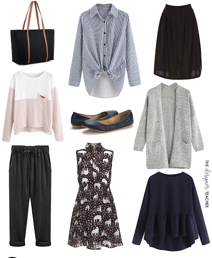

Joan Nansamba

I believe this is the best image to represent who I am this is because I am very passionate about the way I dress because the way we look externally says alot about who are.
Here are some of the projects that I have created;
- My first webpage; This was the first website i createdwith help from moringa school. I used HTML and CSS respectively to create and design this website.
- A resort; This is a website on a resort,this was one of my favourites because I love places with water and obviously resorts have that. I worked on it solo using HTML and CSS
- Travel agency; This is a website on a travel agency and it's mostly talks about trips to popular or tropical areas. I created this using HTML and CSS. I used this project to pracitce my branching.
- Animal shelter; This is a website on an animal shelter, it's composed of two files. I create this website with HTML and CSS.
My background!
I was born in June 2001
I went to Sir Apollo Kaggwa Nakasero for my nursery and P.1. From where I continued to Kampala Parent's School and finished my primary at Taibah International School. Then I continued to KIng's College Budo for my O'level and A'level.
I don't have lots of work exprience as I've just finished my A'level. So most of the work I do is for my parents in their offices such as running errands.